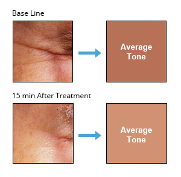
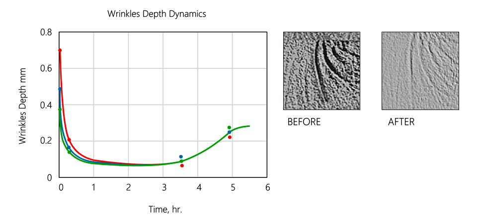

Clinical Estudies
Scientifically Tested & Proven Results
Recover performed real-world tests on women, aged 35 to 65, of various skin types. The results were astounding. Recover tests produced:
- "Radiant" — looking skin
- Enhanced skin color evenness
- Improvement in skin surface texture
- A reduction in skin roughness
- Overall wrinkle reduction
- An immediate aesthetic effect


Per-Wrinkle Tests
One of the major findings from this set of tests was two different patterns of wrinkle response to the Recover treatment:
- Small wrinkles/lines below 0.25 mm practically disappeared after the treatment.
- Wrinkles deeper then of 0.25 – 0.27 mm were flattened to the limit of about 0.25 mm depth independently of their initial depth.
The deeper the wrinkle — the higher the flattening effect.
For example:
- Wrinkles with the initial depth of 0.50 mm were flattened by 50%
- Those with initial depth of 0.75 mm demonstrated flattening by 66%
- Those with 0.35 mm depth were "ironed" only by about 29%.
Research Findings
- There is a rapid reduction of the wrinkle depth right after the Recover treatment in a matter of 10 – 15 min.
- The maximal effect is achieved in about 1.5 – 2 hours after the treatment.
- The high level of the wrinkles depression is effective for about 4 hours.
- The wrinkle depth dynamics become independent of the initial wrinkles' characteristics after about 2 hours after the procedure.
- There is no complete wrinkle restoration after more then 5 hours, and our estimation, supported by some measurements, even after 24 hours, which means that some wrinkle reduction effect is permanent.
- The residual wrinkle depth is the same for all the wrinkles in the area and is about 0.25-0.27 mm. It probably corresponds to the equilibrium state between the Nano-particles network elasticity properties and the local mimic muscles activity (mechanical stress).

Click here to see Recover results from real people.